Lecture 8: Unsupervised learning
CME/STATS 195
Lan Huong Nguyen
October 23, 2018
Contents
What is unsupervised learning?
Dimensionality reduction with PCA
- Cluster Analysis:
- k-means Clustering
- Hierarchical Clustering
Course wrap-up

Unsupervised Learning
Unsupervised Learning
Deals with a task of inferring latent (hidden) patterns and structures unlabeled data.
The goal is to understand the relationships between features or among observations.
There is only \(X\) and no \(Y\), i.e. there are no special variables such as response or output variables, and no prespecified classes labels for the observations.
- Unsupervised learning encompasses:
- dimensionality reduction, manifold learning
e.g. PCA, MDS, Isomap, Diffusion Map, t-SNE, Autoencoder - clustering e.g. k-means, hierarchical clustering, mixture models
- anomaly detection
- latent variable models
- dimensionality reduction, manifold learning
- It can handle the tasks such as:
- image segmentation,
- image clustering / automatic labeling,
- visualization of high dimensional data e.g. gene expression,
- finding cell subtypes.
Dimensionality Reduction
Dimensionality Reduction
- Most of modern datasets are high-dimensional e.g. genetic sequencing, medical records, user internet activity data etc.
- DR or feature extraction methods can reduce the number of variables.
- The methods can be used to:
- compress the data
- remove redundant features and noise
- increase accuracy of learning methods by avoiding over-fitting and the curse of dimensionality
- Common methods for dimensionality reduction include: PCA, CA, ICA, MDS, Isomaps, Laplacian Eigenmaps, tSNE, Autoencoder.
Principal Component Analysis (PCA)


Source: ESL Chapter 14
Maximal variance Projection
- For \(X\in \mathbb{R}^{n \times p}\), \(\tilde X = (X - \bar X)\) is a centered data matrix.
- PCA is an eigenvalue decomposition of the sample covariance matrix:
\[C = \frac{1}{n-1} \tilde X ^T \tilde X = \frac{1}{n-1} V \Sigma^2 V^T\]
- or (equivalently) a singular value decomposition (SVD) of \(\tilde X\) itself:
\[\tilde X = U \Sigma V^T \]
In the above \(U\) and \(V\) are orthogonal matrices and
\(\Sigma\) is a diagonal matrix.
- The projection of X into the space of principal components is called a component scores:
\[T = \tilde{X} V = U\Sigma V^T V = U\Sigma\]
- The weights of the variables in the PCA space, \(V\), are called loadings.
Dimensionality reduction with PCA
- PCA finds a set of \(p\) uncorrelated directions (components) that are linear combinations of the original \(p\) variables.
- These components sequentially explain most of the variation remaining subsequently in the data.
Reduction occurs when the top \(k < p\) components are kept and used to represent the original \(p\)-dimensional data.
The \(k\)-dimensional approximation of \(X\) is:
\[T_k = U_k D_k\]
where \(U_k\) is a matrix with \(k\) first columns of \(U\) and \(D_k\) is the diagonal matrix containing first \(q\) diagonal terms of \(D\)
The US crime rates dataset
The built in dataset includes information on violent crime rates in the US in 1975.
head(USArrests)## Murder Assault UrbanPop Rape
## Alabama 13.2 236 58 21.2
## Alaska 10.0 263 48 44.5
## Arizona 8.1 294 80 31.0
## Arkansas 8.8 190 50 19.5
## California 9.0 276 91 40.6
## Colorado 7.9 204 78 38.7Mean and standard deviation of the crime rates across all states:
apply(USArrests, 2, mean)## Murder Assault UrbanPop Rape
## 7.788 170.760 65.540 21.232apply(USArrests, 2, sd)## Murder Assault UrbanPop Rape
## 4.355510 83.337661 14.474763 9.366385PCA in R
- In R, the function
prcomp()can be used to perform PCA. prcomp()is faster and preferred method overprincomp(); it is a PCA implementation based on SVD.
pca.res <- prcomp(USArrests, scale = TRUE)- The output of
prcomp()is a list containing:
names(pca.res)## [1] "sdev" "rotation" "center" "scale" "x"The elements of prcomp output are:
- The principal components/scores matrix, \(T = U\Sigma\) with projected samples coordinates.
head(pca.res$x)## PC1 PC2 PC3 PC4
## Alabama -0.9756604 1.1220012 -0.43980366 0.154696581
## Alaska -1.9305379 1.0624269 2.01950027 -0.434175454
## Arizona -1.7454429 -0.7384595 0.05423025 -0.826264240
## Arkansas 0.1399989 1.1085423 0.11342217 -0.180973554
## California -2.4986128 -1.5274267 0.59254100 -0.338559240
## Colorado -1.4993407 -0.9776297 1.08400162 0.001450164These are the sample coordinates in the PCA projection space.
- The principal axes matrix, \(V\), contains the eigenvectors of the covariance matrix. A related matrix of loadings is a matrix of eigenvectors scaled by the square roots of the respective eigenvalues:
\[L = \frac{V \Sigma}{\sqrt{n-1}}\]
The loadings or principal axes give the weights of the variables in each of the principal components.
pca.res$rotation## PC1 PC2 PC3 PC4
## Murder -0.5358995 0.4181809 -0.3412327 0.64922780
## Assault -0.5831836 0.1879856 -0.2681484 -0.74340748
## UrbanPop -0.2781909 -0.8728062 -0.3780158 0.13387773
## Rape -0.5434321 -0.1673186 0.8177779 0.08902432pca.res$rotation## PC1 PC2 PC3 PC4
## Murder -0.5358995 0.4181809 -0.3412327 0.64922780
## Assault -0.5831836 0.1879856 -0.2681484 -0.74340748
## UrbanPop -0.2781909 -0.8728062 -0.3780158 0.13387773
## Rape -0.5434321 -0.1673186 0.8177779 0.08902432- PC1 places similar weights on
Assault,Murder, andRapevariables, and a much smaller one onUrbanPop. Therefore, PC1 measures an overall measure of crime. - The 2nd loading puts most weight on
UrbanPop. Thus, PC2 measures a level of urbanization. - The crime-related variables are correlated with each other, and therefore are close to each other on the biplot.
UrbanPopis independent of the crime rate, and so it is further away on the plot.
- The standard deviations of the principal components (square roots of the eigenvalues of \(\tilde X^T \tilde X\))
pca.res$sdev## [1] 1.5748783 0.9948694 0.5971291 0.4164494- The centers of the features, used for shifting:
pca.res$center## Murder Assault UrbanPop Rape
## 7.788 170.760 65.540 21.232- The standard deviations of the features, used for scaling:
pca.res$scale## Murder Assault UrbanPop Rape
## 4.355510 83.337661 14.474763 9.366385Scree plot
A scree plot can be used to choose how many components to retain.
Look for “elbows” in the scree plots
Discard the dimensions with corresponding eigenvalues or equivalently the proportion of variance explained that drop off significantly.
# PCA eigenvalues/variances:
(pr.var <- pca.res$sdev^2)## [1] 2.4802416 0.9897652 0.3565632 0.1734301plot(pca.res)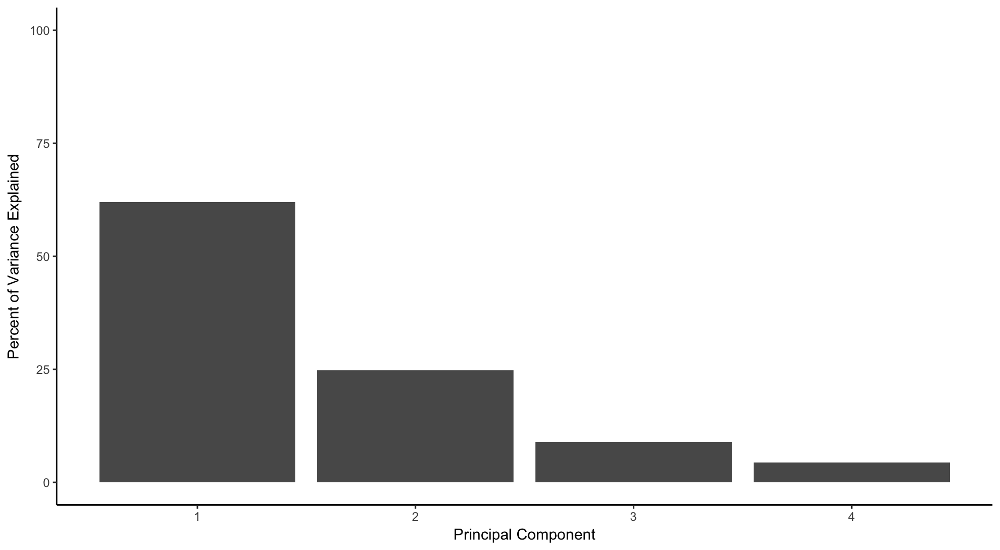
- Percent of variance explained:
# install.packages("factoextra")
library(factoextra)
# Percent of variance explained:
(pve <- 100*pr.var/sum(pr.var))## [1] 62.006039 24.744129 8.914080 4.335752fviz_eig(pca.res) + theme(text = element_text(size = 20))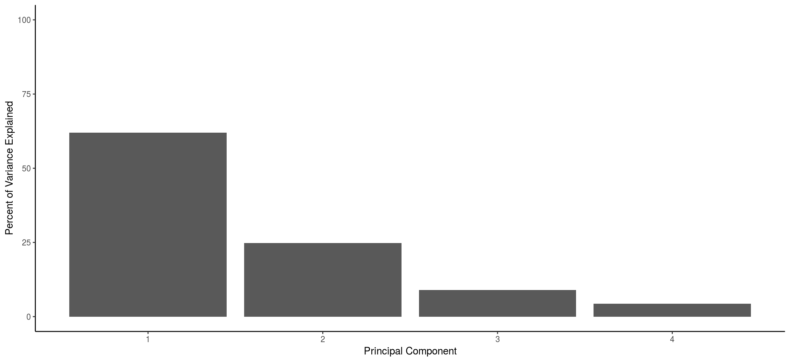
Samples Plot
Each principal component loading and score vector is unique, up to a sign flip. So another software could return this plot instead:
fviz_pca_ind(pca.res) + coord_fixed() +
theme(text = element_text(size = 20))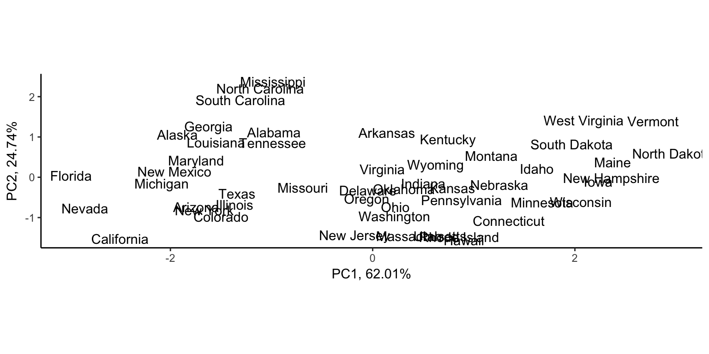
Features Plot
fviz_pca_var(pca.res) + coord_fixed() +
theme(text = element_text(size = 20))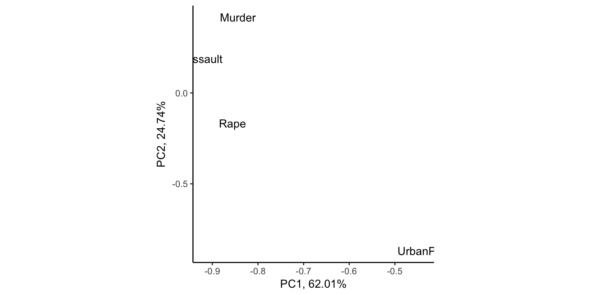
fviz_contrib(pca.res, choice = "var", axes = 1) +
theme(text = element_text(size = 20))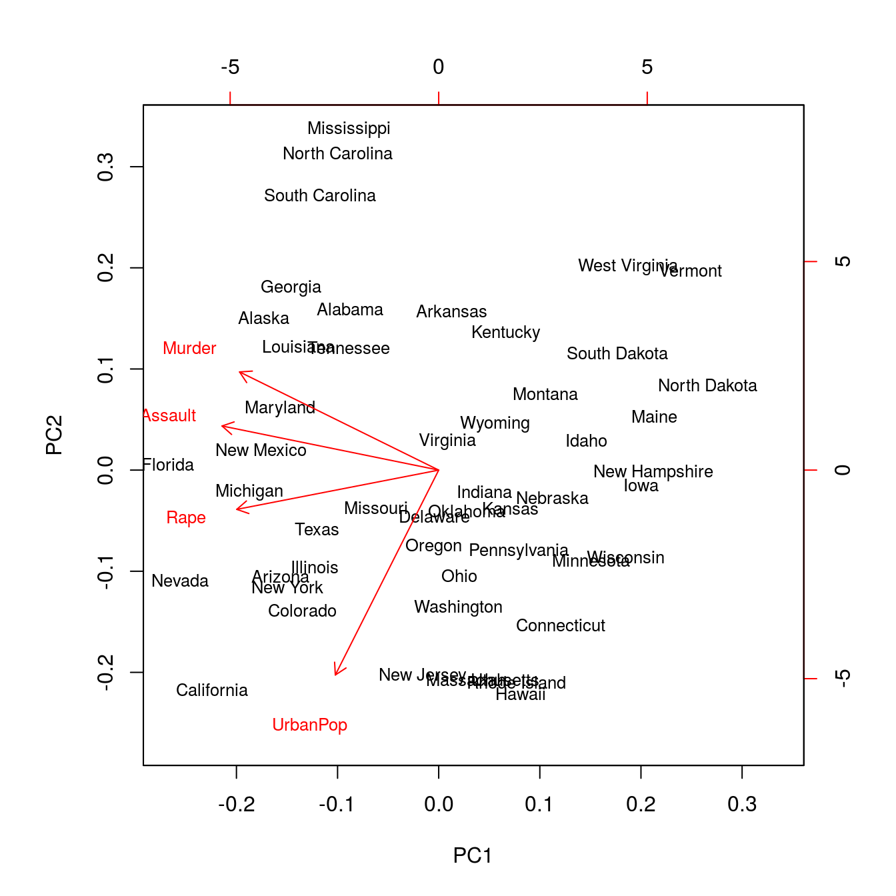
Biplot
A biplot allows information on both samples and variables of a data matrix to be displayed at the same time.
fviz_pca_biplot(pca.res) + coord_fixed() +
theme(text = element_text(size = 20))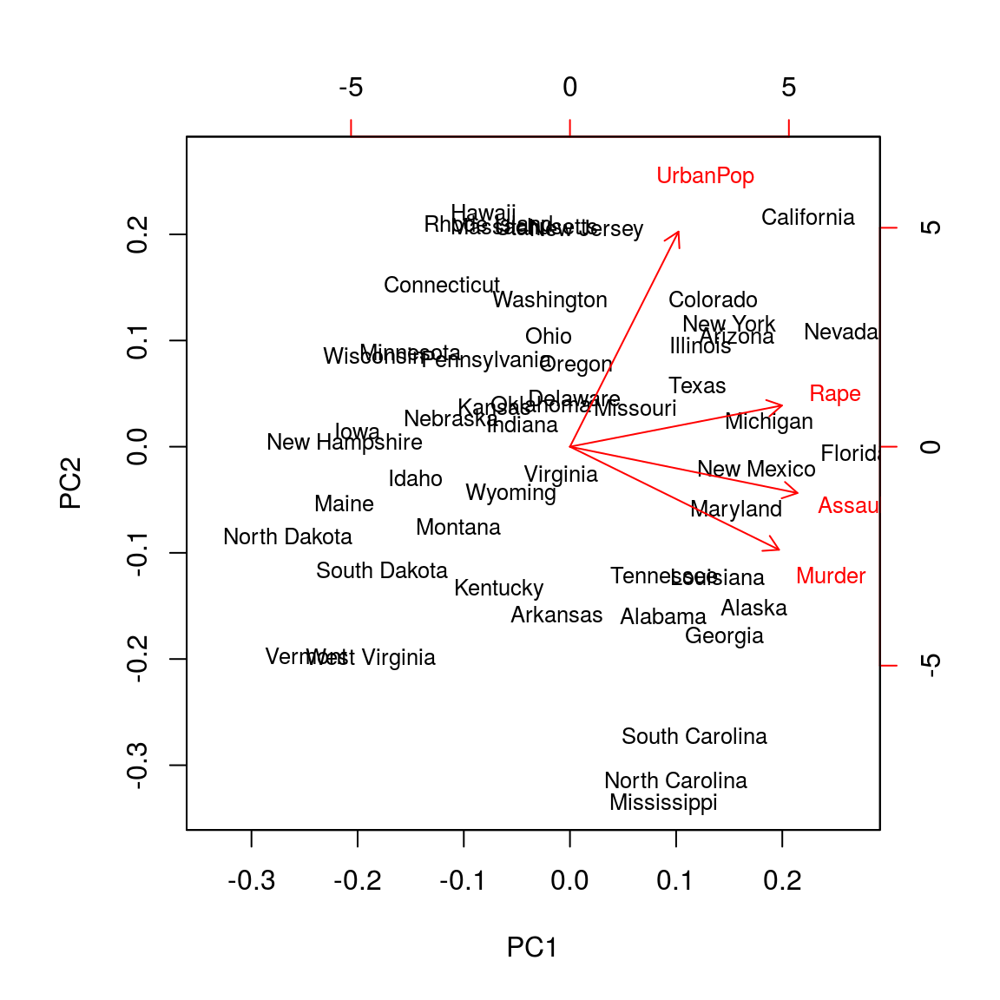
Exercise
Go to the “Lec8_Exercises.Rmd” file, which can be downloaded from the class website under the Lecture tab.
Complete Exercise 1.
Cluster Analysis
Cluster Analysis
Clustering is an exploratory technique which can discover hidden groups that are important for understanding the data.
Groupings are determined from the data itself, without any prior knowledge about labels or classes.
There are the clustering methods available; a lot of them have an R implementation available on CRAN.

- To cluster the data we need a measure of similarity or dissimilarity between a pair of observations, e.g. an Euclidean distance.

k-means
- k-means is a simple and fast iterative relocation method for clustering data into \(k\) distinct non-overlapping groups.
- The algorithm minimizes the variation within each cluster.
 Source: link
Source: link
k-means drawbacks
The number clusters \(k\) must be prespecified (before clustering).
The method is stochastic, and involves random initialization of cluster centers.
This means that each time the algorithm is run, the results obtained can be different.
The number of clusters, \(k\), should be chosen using statistics such as:
Image segmentation
One of the application of k-means clustering is image segmentation.
Here we use a picture of a field of tulips in the Netherlands downloaded from here.
{kind=link}

Importing image to R
- First, we download the image:
library(jpeg)
url <- "http://www.infohostels.com/immagini/news/2179.jpg"
dFile <- download.file(url, "./Lecture8-figure/Image.jpg")
img <- readJPEG("./Lecture8-figure/Image.jpg")
(imgDm <- dim(img))## [1] 480 960 3The image is a 3D array, so we will convert it to a data frame.
Each row of the data frame should correspond a single pixel.
The columns should include the pixel location (
xandy), and the pixel intensity in red, green, and blue (R,G,B).
# Assign RGB channels to data frame
imgRGB <- data.frame(
x = rep(1:imgDm[2], each = imgDm[1]),
y = rep(imgDm[1]:1, imgDm[2]),
R = as.vector(img[,,1]),
G = as.vector(img[,,2]),
B = as.vector(img[,,3])
)k-means in R
- Each pixel is a datapoint in 3D specifying the intensity in each of the three “R”, “G”, “B” channels, which determines the pixel’s color.
head(imgRGB, 3)## x y R G B
## 1 1 480 0 0.3686275 0.6980392
## 2 1 479 0 0.3686275 0.6980392
## 3 1 478 0 0.3725490 0.7019608- We use k-means to cluster the pixels \(k\) into color groups (clusters).
- k-means can be performed in R with
kmeans()built-in function.
# Set seed since k-means involves a random initialization
set.seed(43658)
k <- 2
kmeans.2clust <- kmeans(imgRGB[, c("R", "G", "B")], centers = k)
names(kmeans.2clust)## [1] "cluster" "centers" "totss" "withinss"
## [5] "tot.withinss" "betweenss" "size" "iter"
## [9] "ifault"# k cluster centers
kmeans.2clust$centers## R G B
## 1 0.5682233 0.3251528 0.1452832
## 2 0.6597320 0.6828609 0.7591578# The centers correspond to the following colors:
rgb(kmeans.2clust$centers)## [1] "#915325" "#A8AEC2"# Cluster assignment of the first 10 pixels
head(kmeans.2clust$cluster, 10)## [1] 2 2 2 2 2 2 2 2 2 2# Convert cluster assignment lables to cluster colors
kmeans.2colors <- rgb(kmeans.2clust$centers[kmeans.2clust$cluster, ])
head(kmeans.2colors, 10)## [1] "#A8AEC2" "#A8AEC2" "#A8AEC2" "#A8AEC2" "#A8AEC2" "#A8AEC2" "#A8AEC2"
## [8] "#A8AEC2" "#A8AEC2" "#A8AEC2"ggplot(data = imgRGB, aes(x = x, y = y)) +
geom_point(colour = kmeans.2colors) +
labs(title = paste("k-Means Clustering with", k, "clusters (colors)")) +
xlab("x") + ylab("y") + theme_bw()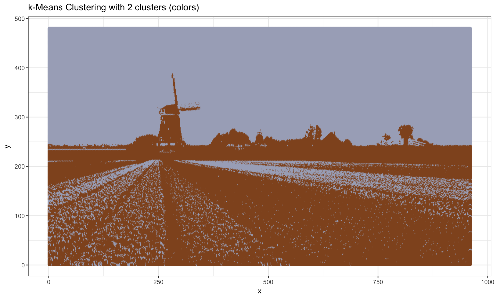
Now add more colors, by increase the number of clusters to 6:
set.seed(348675)
kmeans.6clust <- kmeans(imgRGB[, c("R", "G", "B")], centers = 6)
kmeans.6colors <- rgb(kmeans.6clust$centers[kmeans.6clust$cluster, ])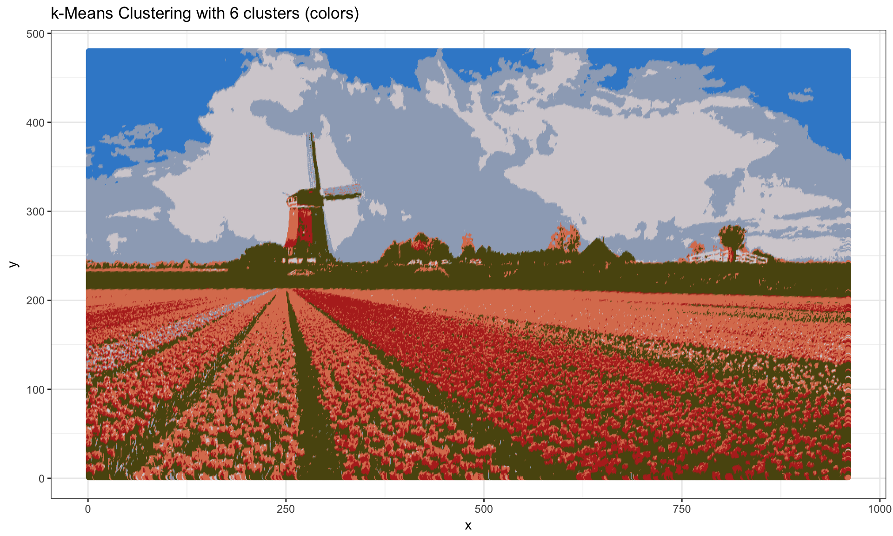
Hierarchical clustering

Alexander Calder’s mobile
- If it’s difficult (or if you simply don’t want) to choose the number of clusters ahead, you can do hierarchical clustering.
Hierarchical clustering can be performed using agglomerative (bottom-up) or divisive (top-down) approach.
The method requires a choice of a pairwise distance metric and a rule of how to merge or divide clusters.
The output of the method can be represented as a graphical tree-based representation of the data, called a dendogram.
The tree allows you to evaluate where the cutoff for grouping should occur.


Hierarchical clustering algorithm

Source: ISL
Results for hierarchical clustering differ depending on the choice of:
A distance metric used for pairs of observations, e.g. Euclidean (L2), Manhattan (L1), Jaccard (Binary), etc
The rule used for grouping clusters that are already generated, e.g. single (minimum), completer (maximum), centroid or average cluster linkages.

Different ways to compute dissimilarity between 2 clusters:

Iris dataset
- We will use the Fisher’s Iris dataset containing measurements on 150 irises.
- Hierarchical clustering will calculate the grouping of the flowers into groups corresponding. We will see that these groups will roughly correspond to the flower species.
head(iris)## Sepal.Length Sepal.Width Petal.Length Petal.Width Species
## 1 5.1 3.5 1.4 0.2 setosa
## 2 4.9 3.0 1.4 0.2 setosa
## 3 4.7 3.2 1.3 0.2 setosa
## 4 4.6 3.1 1.5 0.2 setosa
## 5 5.0 3.6 1.4 0.2 setosa
## 6 5.4 3.9 1.7 0.4 setosaHierarchical clustering in R
- Built-in function
hclust()performs hierarchical clustering. - We will use only the petal dimensions (2 columns) to compute the distances between flowers.
# We use the Euclidean distance for the dissimilarities between flowers
distMat <- dist(iris[, 3:4])
# We use the "complete" linkage method for computing the cluster distances.
clusters <- hclust(distMat, method = "complete")plot(clusters, cex = 0.7)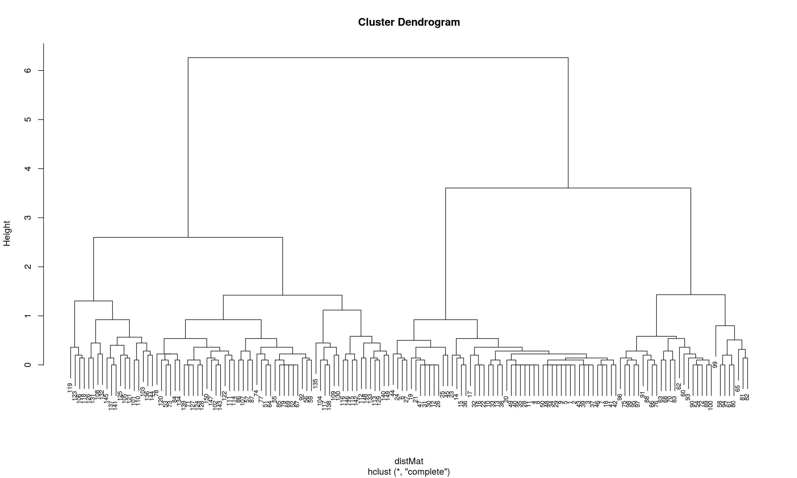
The dendrogram suggests that a reasonable choice of the number of clusters is either 3 or 4.
plot(clusters, cex = 0.7)
abline(a = 2, b = 0, col = "blue")
abline(a = 3, b = 0, col = "blue")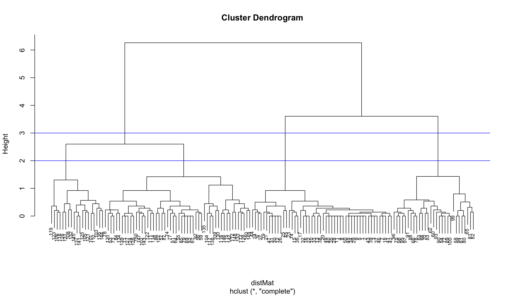
- We pick 3 clusters.
- To get the assignments with 3 clusters from the truncated tree we can use a
cutree()function.
(clusterCut <- cutree(clusters, 3))## [1] 1 1 1 1 1 1 1 1 1 1 1 1 1 1 1 1 1 1 1 1 1 1 1 1 1 1 1 1 1 1 1 1 1 1 1
## [36] 1 1 1 1 1 1 1 1 1 1 1 1 1 1 1 2 2 2 3 2 2 2 3 2 3 3 3 3 2 3 3 2 3 2 3
## [71] 2 3 2 2 3 3 2 2 2 3 3 3 3 2 2 2 2 3 3 3 3 2 3 3 3 3 3 3 3 3 2 2 2 2 2
## [106] 2 2 2 2 2 2 2 2 2 2 2 2 2 2 2 2 2 2 2 2 2 2 2 2 2 2 2 2 2 2 2 2 2 2 2
## [141] 2 2 2 2 2 2 2 2 2 2table(clusterCut, iris$Species)##
## clusterCut setosa versicolor virginica
## 1 50 0 0
## 2 0 21 50
## 3 0 29 0plot(clusters, labels = clusterCut, cex = 0.9)
rect.hclust(clusters, k = 3, border=c("red", "blue", "green"))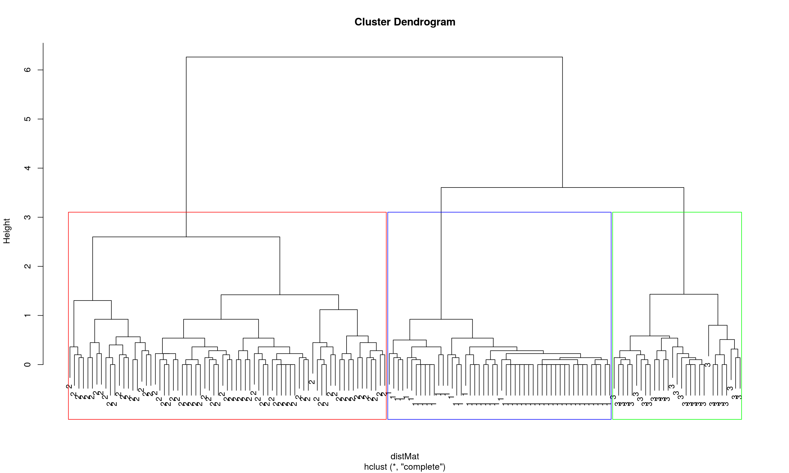
table(clusterCut, iris$Species)##
## clusterCut setosa versicolor virginica
## 1 50 0 0
## 2 0 21 50
## 3 0 29 0- From the table we see that the sentosa and virginica were correctly assigned to separate groups.
- However, the method had difficulty grouping the versicolorm flowers into a separate cluster.
Try another linkage method like “average” and see if it performs better.
# We use the Euclidean distance for the dissimilarities between flowers
distMat <- dist(iris[, 3:4])
# We use the "complete" linkage method for computing the cluster distances.
clusters <- hclust(distMat, method = "average")
plot(clusters, cex = 0.5)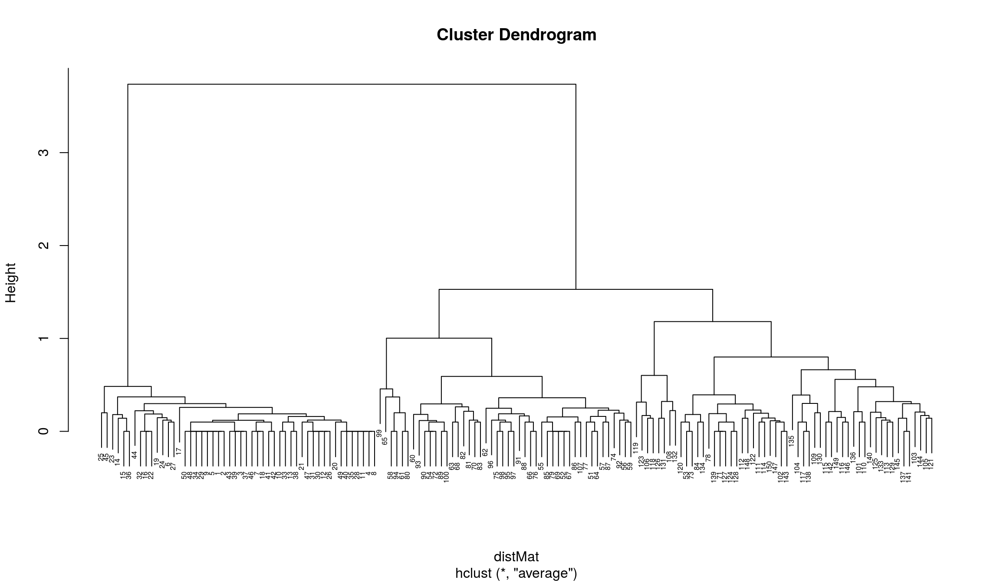
Here we can choose 3 or 5 clusters:
plot(clusters, cex = 0.6)
abline(a = 1.35, b = 0, col = "blue")
abline(a = 0.9, b = 0, col = "blue")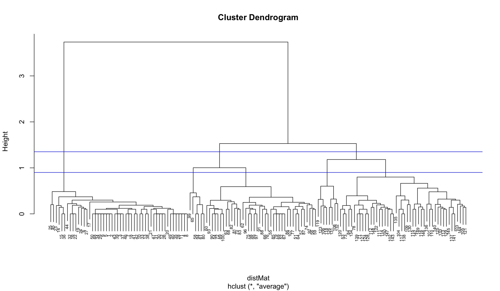
Again we choose 3 clusters
clusterCut <- cutree(clusters, 3)
table(clusterCut, iris$Species)##
## clusterCut setosa versicolor virginica
## 1 50 0 0
## 2 0 45 1
## 3 0 5 49We see that this time the results are better in terms of the cluster assignment agreement with the flower species classification.
plot(clusters, labels = clusterCut, cex = 0.7)
rect.hclust(clusters, k = 3, border=c("red", "blue", "green"))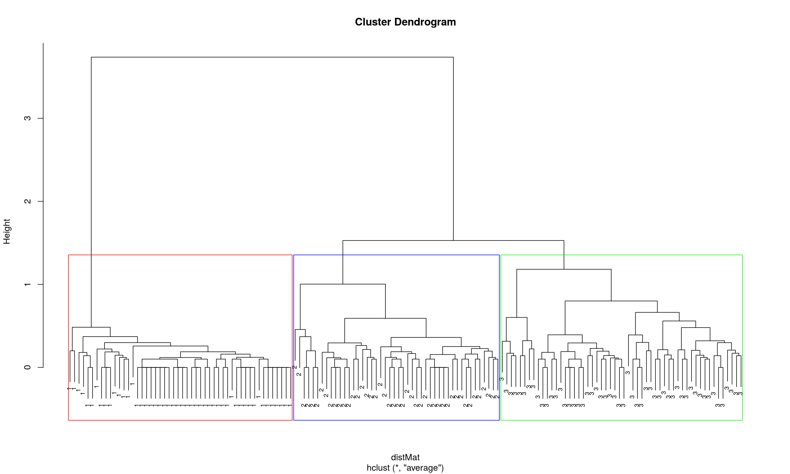
- 2D plot of the iris dataset using petal dimensions as coordinates.
- The cluster assignments partition the flowers into species with high accuracy.
ggplot(iris, aes(Petal.Length, Petal.Width)) + theme_bw() +
geom_text(aes(label = clusterCut), vjust = -1) +
geom_point(aes(color = Species)) + coord_fixed(1.5)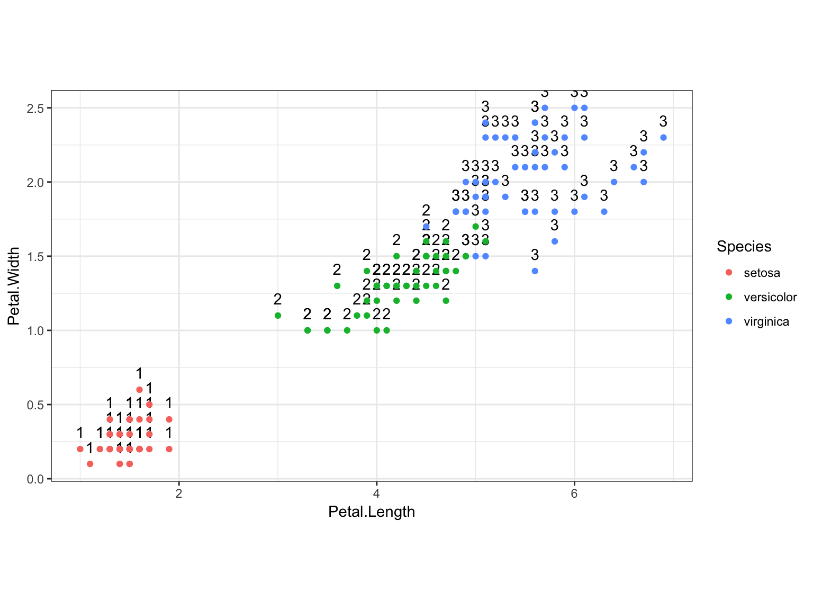
Exercise
Go to the “Lec8_Exercises.Rmd” file, which can be downloaded from the class website under the Lecture tab.
Complete Exercise 2.
Course wrap-up
Our journey

How to learn more
Where to find out more about the topics of this class:
- R for Data Science, by Hadley Wickham: (http://r4ds.had.co.nz)
- The tidyverse: (https://www.tidyverse.org)
- RStudio: (https://www.rstudio.com/)
- R Markdown: (http://rmarkdown.rstudio.com/)
- Many online tutorials and forums (e.g. Data Carpentry and DataCamp)
How to learn more advanced topics on R:
- Take “Stat 290: Computing for Data Science”
- Read “Advanced R”, by Hadley Wickham: (http://adv-r.had.co.nz/)
- Read “R packages”, by Hadley Wickham: (http://rpkgs.had.co.nz/)
Extra: Other unsupervised techniques
Multidimensional Scaling
MDS algorithm aims to place each object in N-dimensional space such that the between-object distances are preserved as well as possible. Each object is then assigned coordinates in each of the N dimensions. The number of dimensions of an MDS plot N can exceed 2 and is specified a priori. Choosing N=2 optimizes the object locations for a two-dimensional scatterplot.
There are different types of MDS methods including, Classical MDS, Metric MDS and Non-metric MDS. The details on the differences ca be found on:
- Wiki page on Multidimensional Scaling,
- Chapter 8 of Applied Multidimensional Scaling book by Borg, Groenen, and Mair.
Perception of colors
- Gosta Ekman studied how people perceive colors in his paper from 1954.
- He collected survey data from 31 subjects, which included participants’ rating of the dissimilarity between each pair of 14 colors on a 5-point scale.
- The ratings of all subjects were averaged, and the final mean dissimilarity matrix was used for constructing “map of colors”.
14 colors were studied with wavelengths in the range between 434 and 674 nm.

# color similarity scores
ekmanSim <- readRDS("./Lecture8-figure/ekman.rds")
print(ekmanSim)## 434 445 465 472 490 504 537 555 584 600 610 628 651
## 445 0.86
## 465 0.42 0.50
## 472 0.42 0.44 0.81
## 490 0.18 0.22 0.47 0.54
## 504 0.06 0.09 0.17 0.25 0.61
## 537 0.07 0.07 0.10 0.10 0.31 0.62
## 555 0.04 0.07 0.08 0.09 0.26 0.45 0.73
## 584 0.02 0.02 0.02 0.02 0.07 0.14 0.22 0.33
## 600 0.07 0.04 0.01 0.01 0.02 0.08 0.14 0.19 0.58
## 610 0.09 0.07 0.02 0.00 0.02 0.02 0.05 0.04 0.37 0.74
## 628 0.12 0.11 0.01 0.01 0.01 0.02 0.02 0.03 0.27 0.50 0.76
## 651 0.13 0.13 0.05 0.02 0.02 0.02 0.02 0.02 0.20 0.41 0.62 0.85
## 674 0.16 0.14 0.03 0.04 0.00 0.01 0.00 0.02 0.23 0.28 0.55 0.68 0.76# convert similarities to dissimilarities
ekmanDist <- 1 - ekmanSimMDS in R
- Use
cmdscale()built-in function for classical MDS. - Metric iterative MDS and non-metric MDS function are available in a package
smacofand other packages are also compared here.
ekmanMDS <- cmdscale(ekmanDist, k = 2)
res <- data.frame(ekmanMDS)
head(res)## X1 X2
## 434 -0.2137161 -0.41852576
## 445 -0.2562012 -0.41065436
## 465 -0.4119890 -0.30925977
## 472 -0.4369586 -0.27266935
## 490 -0.4388604 0.07518594
## 504 -0.3364868 0.37262279library("ggplot2")
wavelengths <- round(seq( 434, 674, length.out = 14))
res$wavelength <- factor(wavelengths, levels =wavelengths)
ggplot(res, aes(X1, X2)) + geom_point() + theme_bw() +
geom_text(aes(label = wavelength), vjust=-1)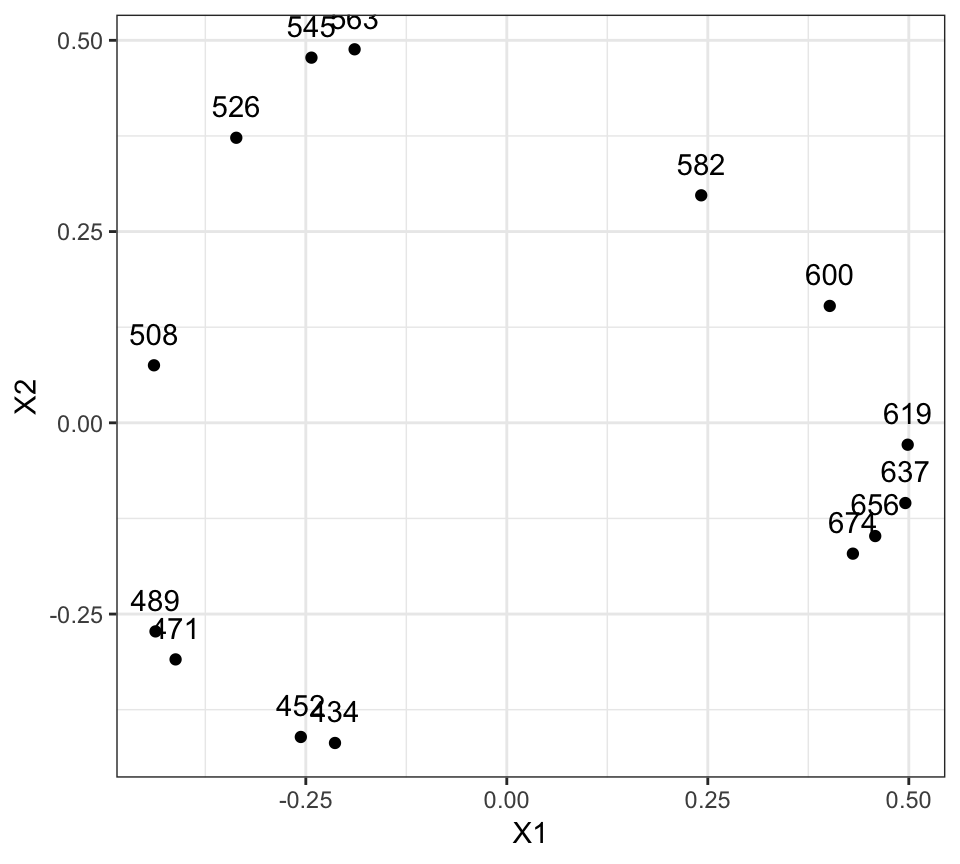
The wavelengths were converted to hexadecimal colors using this website.
hex <- c("#2800ff", "#0051ff", "#00aeff", "#00fbff", "#00ff28", "#4eff00", "#92ff00",
"#ccff00", "#fff900", "#ffbe00", "#ff7b00", "#ff3000", "#ff0000", "#ff0000")
ggplot(res, aes(X1, X2)) + theme_bw() +
geom_point(aes(color = wavelength), size = 2) +
geom_text(aes(label = wavelength), vjust=-1) +
scale_color_manual(values = hex)
t-Distributed Stochastic Neighbor Embedding
- t-SNE is a nonlinear technique developed by van der Maaten and Hinton for dimensionality reduction
- It is particularly well suited for the visualization of high-dimensional datasets.
- The method performs well at visualizing and exposing inherent data clusters
- It has been widely applied in many fields including genomics, where the method is commonly used in single-cell literature for visualizing cell subpopulations.
tSNE on mass cytometry data
The following example shows how to calculate and plot a 2D t-SNE projection using the Rtsne package. The example and code was developed by Lukas Weber.
- The dataset used is the mass cytometry of healthy human bone marrow dataset from the study conducted by Amir et al. (2013).
- Mass cytometry measures the expression levels of up to 40 proteins per cell and hundreds of cells per second.
- In this example t-SNE is very effective at displaying groups of different cell populations (types).
# here we use a subset of the data
path <- "./Lecture8-figure/healthyHumanBoneMarrow_small.csv"
dat <- read.csv(path)# We select 13 protein markers to used in Amir et al. 2013
colnames_proj <- colnames(dat)[c(11, 23, 10, 16, 7, 22, 14, 28, 12, 6, 8, 13, 30)]
dat <- dat[, colnames_proj]
head(dat)## X144.CD11b X160.CD123 X142.CD19 X147.CD20 X110.111.112.114.CD3
## 1 5.967343 14.0255518 0.5294468 5.0397625 149.204117
## 2 -2.965949 -0.4499034 -0.9504946 3.2883098 102.398453
## 3 22.475813 7.9440827 -2.5556924 -0.3310032 -9.759324
## 4 -5.457655 -0.3668855 -0.8048915 1.7649024 146.526154
## 5 127.534332 13.2033119 0.7140800 -1.0700325 7.266849
## 6 12.181891 9.0580482 1.9163597 2.1253521 653.283997
## X158.CD33 X148.CD34 X167.CD38 X145.CD4 X115.CD45 X139.CD45RA
## 1 2.4958646 4.3011222 29.566343 0.8041515 606.56268 291.058655
## 2 0.3570583 1.3665982 26.355003 -0.2354967 192.41901 -1.998943
## 3 304.6151733 3.0677378 165.949097 0.3407812 98.22443 5.670944
## 4 -2.2423408 -0.7205721 3.933757 -0.6418993 482.09525 13.697150
## 5 343.4721985 -0.9823112 193.646225 30.6597385 212.06926 6.608723
## 6 3.9792464 -1.5659959 163.225845 152.5955353 284.07599 36.927834
## X146.CD8 X170.CD90
## 1 346.5215759 12.444887
## 2 35.8152542 -0.615051
## 3 0.8252113 13.740484
## 4 155.2028503 8.284868
## 5 2.1295056 10.848905
## 6 14.1040640 6.430328# arcsinh transformation
# (see Amir et al. 2013, Online Methods, "Processing of mass cytometry data")
asinh_scale <- 5
dat <- asinh(dat / asinh_scale)
# prepare data for Rtsne
dat <- dat[!duplicated(dat), ] # remove rows containing duplicate values within rounding
dim(dat)## [1] 999 13library(Rtsne)
# run Rtsne (Barnes-Hut-SNE algorithm) without PCA step
# (see Amir et al. 2013, Online Methods, "viSNE analysis")
set.seed(123)
rtsne_out <- Rtsne(as.matrix(dat), perplexity = 20,
pca = FALSE, verbose = FALSE)# plot 2D t-SNE projection
plot(rtsne_out$Y, asp = 1, pch = 20, col = "blue",
cex = 0.75, cex.axis = 1.25, cex.lab = 1.25, cex.main = 1.5,
xlab = "t-SNE dimension 1", ylab = "t-SNE dimension 2",
main = "2D t-SNE projection")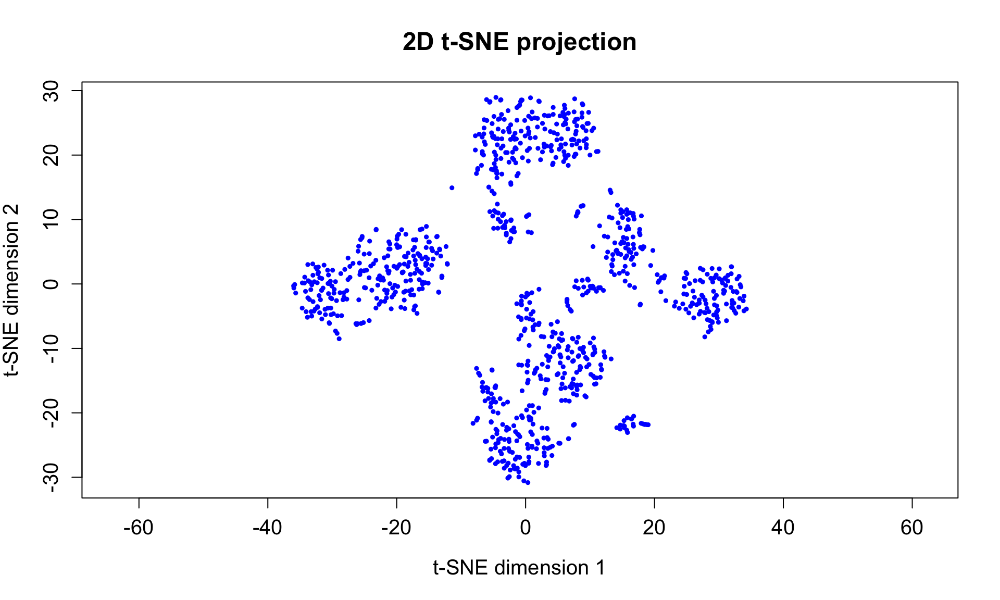